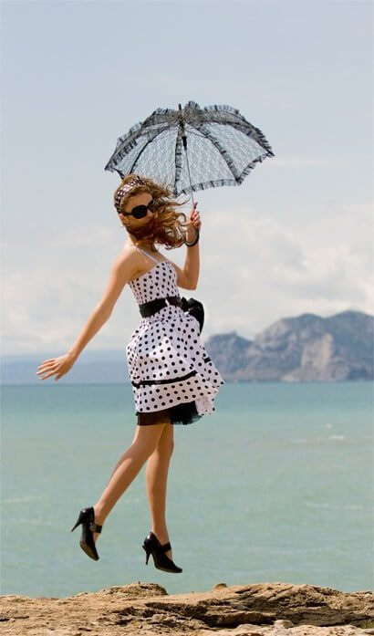

Ana:
¡Piernas de lujo siempre! ¿Cómo me deshago de los pies hinchados y de las piernas cansadas?
¡Hola a todos! ¡Ana está de nuevo con vosotros! Me gustaría compartir mi alegre noticia... ¡Por fin he encontrado los métodos que me han ayudado a aliviar la sensación de pesadez y dolor en mis piernas!
¿Recordáis que hace un año me quejaba en mi post de la sensación de pesadez, dolor e hinchazón de piernas y que pedí vuestros consejos? ¡Muchas gracias a todos los que me respondieron!
Hace un año tenía un problema realmente serio - cada tarde mis piernas se sentían muy cansadas: sentía un dolor apagado y pesadez, ¡y por las noches me despertaba por las convulsiones que me daban! Durante aquel tiempo tuve que olvidarme de mis tacones favoritos ya que solo podía llevar zapatillas. Lo más desagradable de todo es que empecé a notar venas varicosas y arañas vasculares. ¡No es de extrañar! Después de todo, mi trabajo implica estar todo el día de pie. Pero es que me encanta mi trabajo y los tacones... ¿Realmente tendré que renunciar a ellos por el bien de la salud y la belleza de mis piernas? ¡He intentado encontrar otras soluciones a este problema y lo he conseguido! Os presento mi lista de secretos que tonifican y alivian los pies cansados de forma increíble:
1. Ducha de contraste
Por la mañana y por la noche mimo mis piernas con una ducha de contraste. Les doy una ducha durante 10 minutos y alterno el agua tibia (no caliente, ¡tibia!) con agua fría.
2. Automasaje
Después de la ducha masajeo con mucho cariño mis piernas: haciendo poca presión las acaricio desde abajo (justamente desde el tobillo) hasta arriba. 15-20 veces es suficiente para cada pierna.
3. Ejercicios para las piernas
En Internet podréis encontrar una gran variedad de ejercicios diferentes. Personalmente a mí me gustan mucho los ejercicios "bicicleta" (tumbados en el suelo boca arriba tenéis que girar unos pedales imaginarios) y ''tijeras'' (tenéis que tomar la misma posición y cruzar las piernas de forma alterna y después abrirlas). Aquí tenéis unos dibujos con ejercicios útiles:

4. Usar gel para piernas con troxerutina
Una buena crema para las piernas será el principal ayudante de vuestras piernas. Después de usar muchos productos, la crema es la que más me ha gustado, la llevo usando desde hace tiempo y no la cambiaría por ninguna otra crema. Para mí lo importante es que en la composición de una crema haya troxerutina - las cremas que contienen troxerutina tienen un excelente efecto antihinchazón, tonificante y reafirmante. Сomponentes auxiliares: los extractos del castaño de Indias, del ginkgo biloba y hamamelis contribuyen a la mejora de la microcirculación, luchan contra las "arañas vasculares" y además ayudan a aliviar la pesadez y calman la piel. Por supuesto que se puede usar cualquier otro gel o crema con troxerutina. Para mí es importante que la crema sea fácil de aplicar, que se absorba rápidamente y que no deje manchas pegajosas en la ropa - y lo cierto es que , en mi opinión, cumple perfectamente con su deber.

Por cierto, que casi lo olvido, hace poco sustituí la ducha cliente por la ducha de contraste, y además una vez a la semana voy a la piscina - ¡lo que también es muy bueno para la salud de las venas!
Estos consejos tan simples me han ayudado a devolver la belleza estética y la maravillosa sensación de alivio a mis piernas. Por fin puedo volver a llevar minifaldas y "volar" como un pájaro sobre mis tacones favoritos durante todo el día y sin cansarme ya que la sensación de ligereza no me abandona el día entero. Espero que mi experiencia os ayude a vosotros también :-) ¡Deseo a todos que tengáis unas piernas preciosas y sanas! ¡Hasta la próxima! :-)